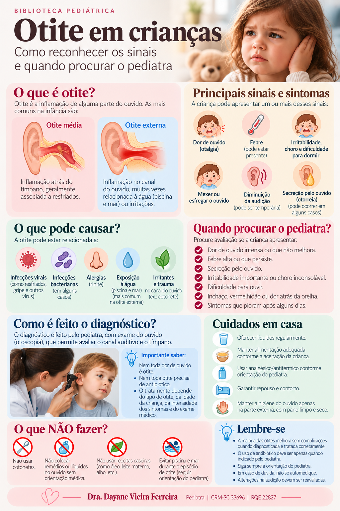

Otite em crianças
Dor de ouvido, irritabilidade, febre e secreção: entenda os sinais e saiba quando procurar avaliação.
O que é otite média aguda?
É uma inflamação/infeção da orelha média, região localizada atrás do tímpano. É especialmente frequente nas crianças pequenas, entre outros motivos, porque a tuba auditiva ainda apresenta características anatômicas e funcionais que favorecem o acúmulo de secreções.
Pode aparecer após um resfriado?
Sim. Infecções das vias respiratórias são frequentes na infância e podem preceder episódios de otite média.
Mexer no ouvido significa otite?
Não necessariamente. A SBP ressalta que levar a mão ao ouvido, sozinho, não confirma o diagnóstico.
Quais sinais podem aparecer?
- dor ou desconforto no ouvido;
- irritabilidade e choro, especialmente em crianças pequenas;
- febre, que pode ou não estar presente;
- sensação de ouvido abafado ou redução temporária da audição em crianças maiores;
- secreção saindo do ouvido em alguns casos.
Otite média e otite externa são diferentes
Otite média
A inflamação ocorre atrás do tímpano. A avaliação da membrana timpânica é essencial para o diagnóstico.
Otite externa
A inflamação ocorre no canal do ouvido. Pode surgir após exposição à água e costuma provocar dor que piora ao tocar ou pressionar a entrada do ouvido.
Toda otite precisa de antibiótico?
Não. Algumas otites médias agudas leves podem melhorar sem antibiótico. Dependendo da idade, do ouvido acometido, da intensidade dos sintomas, da presença de secreção e dos achados no exame, o pediatra pode indicar observação por um período ou tratamento imediato.
A SBP relata que muitos quadros sem características de maior gravidade apresentam melhora clínica sem antibiótico. Diretrizes internacionais também preveem observação cuidadosa em casos selecionados.
Cuidados importantes
- Mantenha a criança hidratada.
- Controle da dor e da febre pode ser necessário, utilizando medicamentos e doses orientados para a criança.
- Não introduza cotonetes, grampos ou outros objetos no canal do ouvido.
- Não pingue receitas caseiras, óleos ou medicamentos no ouvido sem orientação profissional.
- Descongestionantes e anti-histamínicos não demonstraram benefício para aliviar os sintomas da otite média aguda.
Quando procurar atendimento rapidamente?
Procure avaliação médica com prioridade diante de:
- criança muito abatida ou com piora importante do estado geral;
- dor intensa ou sintomas que pioram rapidamente;
- secreção saindo do ouvido;
- vermelhidão ou inchaço atrás da orelha, especialmente se a orelha parecer projetada para frente;
- sinais de doença grave ou preocupação importante com a criança.
E se parecer que a criança não está ouvindo bem?
Depois de uma otite pode permanecer líquido atrás do tímpano por algum tempo. Se houver dificuldade auditiva persistente, necessidade frequente de repetir frases, alterações de fala ou aprendizagem, ou episódios recorrentes, converse com o pediatra. A avaliação da audição pode ser necessária.
Perguntas frequentes
Febre confirma otite?
Não. A febre é inespecífica e pode estar relacionada ao próprio quadro respiratório.
Posso olhar o ouvido em casa?
A aparência externa não permite confirmar otite média. O diagnóstico exige avaliação adequada do tímpano.
Antibiótico sempre resolve mais rápido?
Nem toda criança se beneficia de antibiótico. A indicação depende do diagnóstico e das características do caso.
Otites repetidas merecem avaliação?
Sim. Episódios recorrentes ou alterações persistentes de audição devem ser discutidos com o pediatra.
Infográfico: otite em crianças

Fontes e revisão
Conteúdo baseado em orientações da Sociedade Brasileira de Pediatria (SBP), CDC e NICE.
SBP — Otite Média
SBP — Otite externa ou otite do nadador
CDC — Pediatric outpatient clinical care
NICE — Acute otitis media
Última revisão: setembro de 2026.